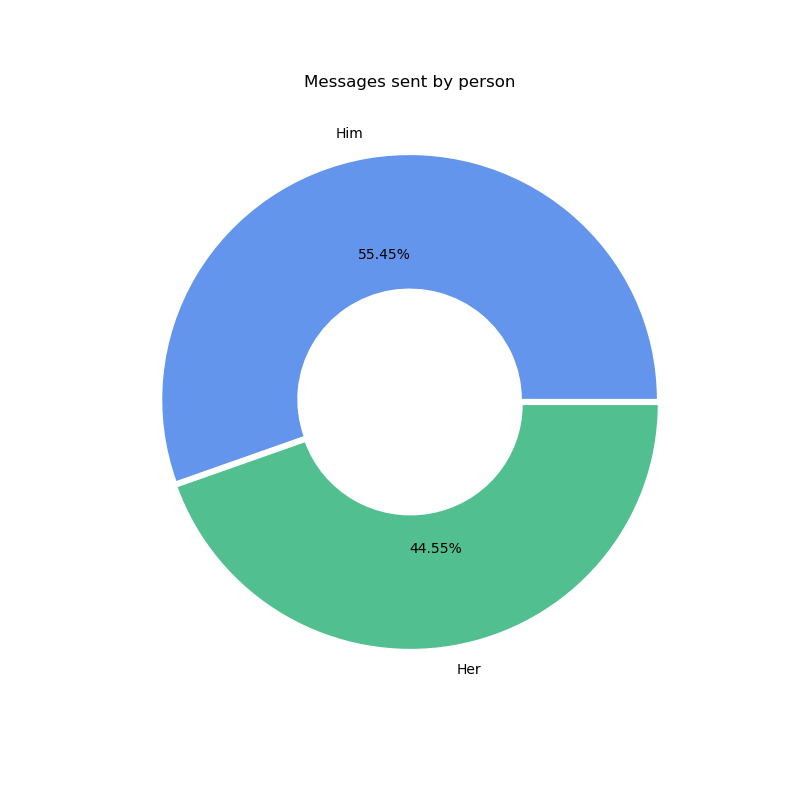
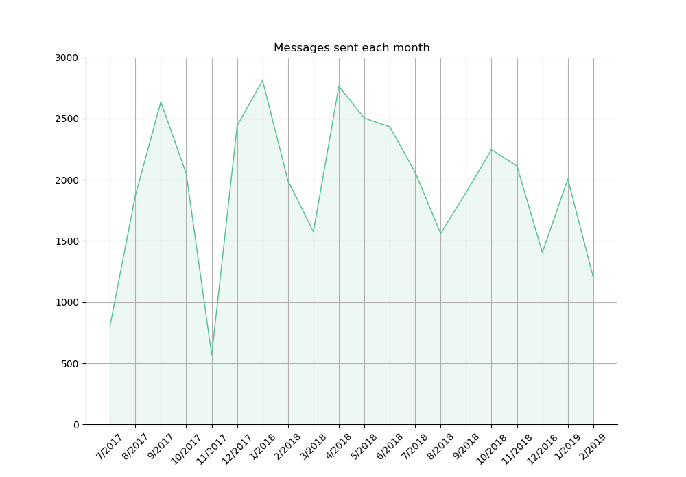

Geeky Love!
Happy Anniversary!
Hi honey! I hope that this in not too much, but if I am spending so much time at university, might as well use what I'm learning for something useful. For this special date, I prepared a brief analysis on the WhatsApp conversations we have had through our history together. I found some interesting things about us, I hope you like it :)
About the Data
I analyzed all the WhatsApp messages we have sent from the day we started talking through the app, until a few days before our anniversary, that is, from 13.07.2017 to 21.02.2019. The messages include a lot of cheesy notes, good morning words and lots of love. These are some of the most important facts I found:
- In total, we have sent 38,996 messages (up to the date of the analysis).
- Since we met, we have messaged for 556 days.
- On average, we send 70.02 messages every day.
- The day of the week that we send the most messages is Tuesday.
- The day we sent the most messages was 27.04.2018, with 257 messages.
- We have written the word "honey" 1004 times.
- We have written the word "amo" 434 times.
- We have written the word "liebe" 217 times.
- We have written the word "love" 39 times (These words are only counting written messages. I'm sure we have said these words many more times while talking).
I wanted to know more about our messaging habits, so I decided to start checking how many messages we have sent to each other:
It seems that my drunken messages have gone too far :D But really, after we started talking more than 1 year ago, we haven't stopped!
About the Dates
I think we use this messaging app very often, and I wanted to investigate more about hour habits with it. So, I started with the big picture. The first thing I wanted to see is throughout the months, how many messages are there:
The month where we have sent the most messages is January 2018, and the one that had the least messages is November 2017 (This is my fault, I'm really REALLY sorry for that).
This next plot is a bit messy, because it has the number of all our messages every day:

Since we know each other, we only haven't talked/messaged for 33 days. This is an interesting number, because all of them appear after we got into the relationship. So when these days happen it means that we are actually together (so no need of WhatsApp). Still, we have been physically together more days than those in the graph. You can see that they appear much more often now that I'm here in Germany. Two big clusters of no-message days can also be seen when I came to Berlin, and during our vacations in Mexico.
There are 6 days in which we have sent more than 190 messages, the closest one to date on 07.02.2019 with 220 messages, and the biggest one on 27.04.2018 with 257!
Then, I wanted to see if there was a pattern on which day of the week we message the most:

Apparently, Tuesdays and Wednesdays are our busiest and least busy days, but there is not a significant variation on the other days. We constantly message, no matter what day it is.
Finally, at what time do we like to message the most?

The times are all in German time zone. We prefer to talk more on the afternoons. I think this also holds when I was in Mexico, as you had to wait for me to wake up. We can see that our busiest times are around 19h to 22h and our inactive times from 5h to 9h.
About the Words we use
Antoher iteresting thing that I analyzed are the words that we used the most. Without the stop-words, these are the most common words that we use:

There are a couple or remarks I want to make about this graph. First of all, even if the words "I" and "you" are stop-word, I didn't delete them because I think that they convey a nice meaning. We talk about what happens in our daily life, and we are very interested in hearing what the other has to say. Next comes the smiley ":)", we wish good on the other a lot. Next is the "<media>". Between photos, memes, and good-night messages, we have sent in total 1876 files between us. It is not a misunderstanding that I love hearing your voice, and maybe you like mine too.
Other honorable mentions are "honey", "home", "sleep", ":/", "wish", "miss", "te", "bed", "best", "everything", "amo", "thinking", "night", and ":0" which I think we really use a lot (except maybe the last one).
You could think that there is a lot more information that we can get out of the data, but this is the one that I considered the most important. I created this document to emphasize that communication has always been present in our relationship. From the very beginning, we enjoyed each other's company and we haven't stopped. Together, we are really reducing the distance between each other. There will realy be a day in which we no longer have to write a good-morning text, or send a good-night voice message.
I appreciate even the little messages that you send me. You are a very important part of my life, and I love hearing (or reading) what happens in your life, your worries and your joys. Today we rely on WhatsApp, but I promise that in the not-so-distant future we will not use it as much, because we will be much much closer.
Te amo tanto corazón